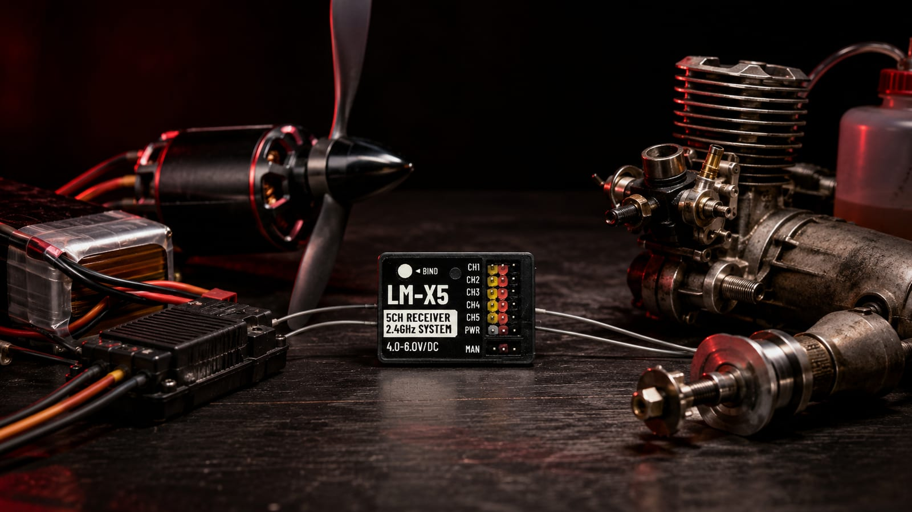
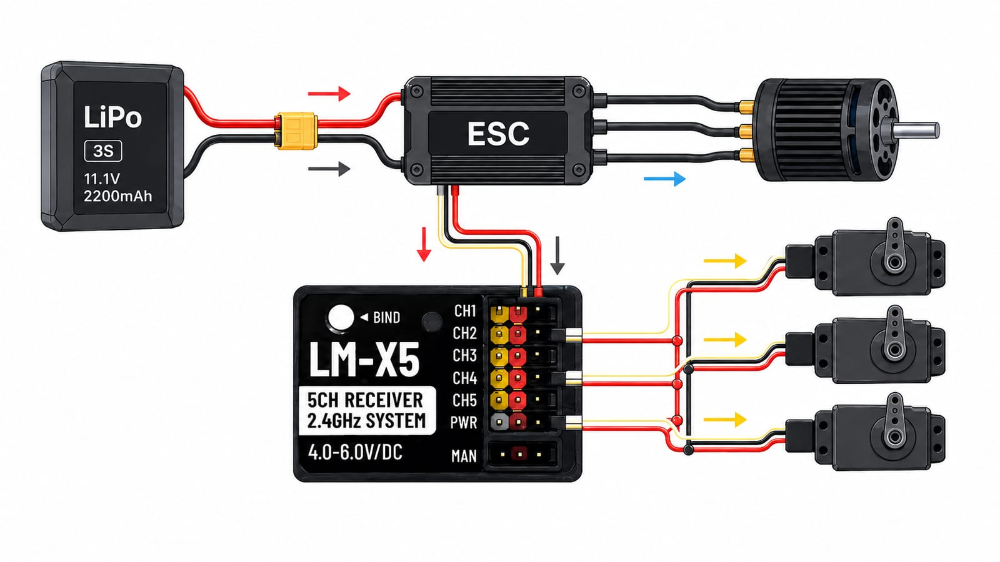
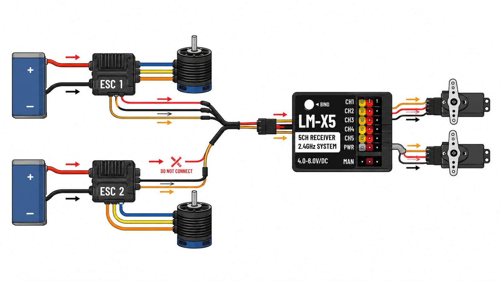
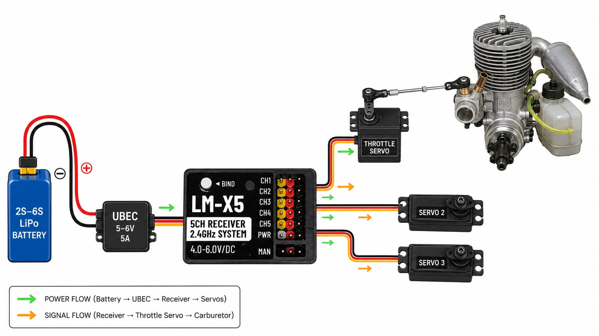
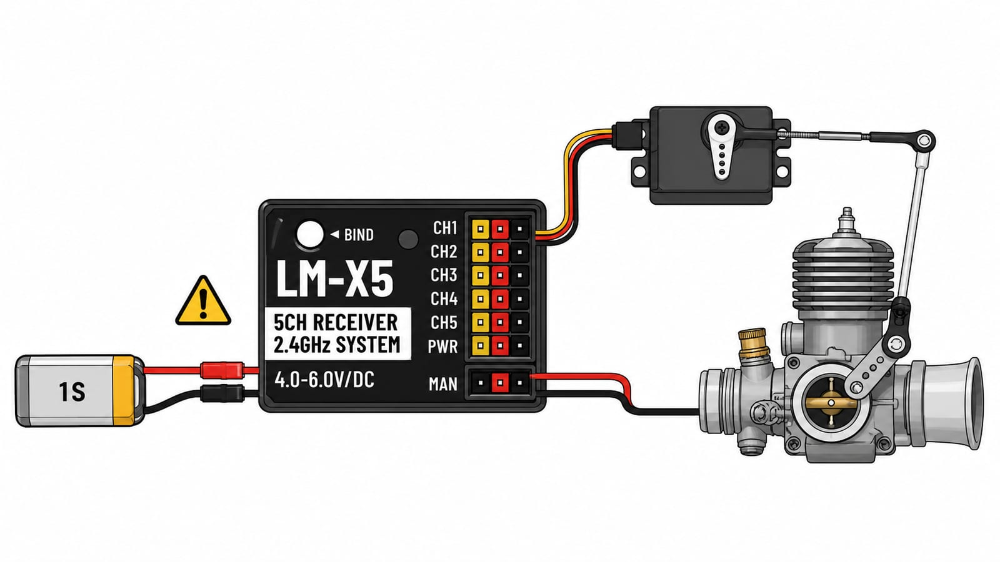

Before we get into wiring, let's talk about which handle is actually right for you — because that decision matters more than people think.
If you just want to fly sport, and you like having control over the throttle to manage takeoff, landing, and how fast you're going — the LineMaster 2.4GHz Zephyr, our single-channel handle, is really all you need. The same goes if you're a carrier pilot used to flying with a single throttle channel; there's no reason to carry the extra complexity of more channels you won't use.

On the other hand, if you're into carrier and you're used to more than one channel — say, a servo to release the arrestor hook, or a servo to slide the line guide back — or if you're flying scale, where the model usually needs several channels besides the throttle, that's when the LineMaster 2.4GHz Typhoon (up to 5 channels) is the right call.

What actually changes depending on your setup is how you power and wire the receiver, and that depends on one thing: are you flying electric or combustion?
Electric Models
LineMaster 2.4GHz receivers — the LM-X5, LM-X2 and LM-X1 — are all designed to work the same way, in a 4 to 6V range. The most common — and easiest — way to get there is through the BEC (Battery Eliminator Circuit, the circuit that removes the need for a separate battery) built into your ESC (Electronic Speed Controller, the electronic controller that regulates your motor's speed). The ESC plugs into the throttle channel, and that same connection is what feeds power to the receiver and every other servo on board.

If you're flying a multi-motor model with two or more ESCs, you'll be using Y-harnesses to combine them — but here's the part to be careful about: only connect the positive (power) wire from ONE of the ESCs. The positive wires from the others should not be connected. Only one ESC should ever be powering the receiver and servos at the same time — never let more than one BEC try to feed the same rail.

One more thing worth checking: how much current your setup actually draws. That depends on how many servos you have connected and how much each one pulls (check your servo's datasheet for that). Whatever the total comes out to, your ESC's BEC needs to be rated to deliver that current with some headroom to spare — don't run it right at the edge of its rating.
Combustion Models
For a combustion engine, controlling the throttle means using an RC carburetor, actuated by a servo wired into the throttle channel. The catch is that there's no ESC in this picture — so the receiver needs to get its power from somewhere else.
The most common (and the setup we'd recommend) is a dedicated UBEC — an independent BEC that doesn't depend on any ESC — putting out 4 to 6V (most are 5V), powered by a 2S to 6S battery. Just like with electric setups, add up what your servos draw (datasheet again) and make sure the UBEC you pick can comfortably supply that current.

You can technically use an ESC just for its BEC function here too, but honestly, it's unnecessary dead weight — today's dedicated UBECs are cheap and light, so there's no real reason to carry an ESC you're not using for anything else. In most cases, powering the UBEC with a small 2S 250mAh battery would be more than enough for several flight sessions, at a weight of roughly 20-25 grams.
There's a third option, and we want to be upfront about it: powering the receiver directly from a 1S battery, with no BEC at all. In practice, this works — a fully charged 1S sits at 4.2V, which is enough to power the receiver. But the servo controlling your carburetor also has to be rated for that voltage range; most small 9g servos handle 4-6V fine, but check the datasheet to be sure. The real issue shows up as the battery discharges: once it drops below 4V, you're pushing your luck, and the receiver can start to misbehave.

A quick, honest disclaimer: we've run this setup at our own flying field without issues — but only on models with a single servo controlling the throttle, since a carburetor offers basically no mechanical resistance and the servo barely draws anything. Even so, we don't recommend this method. It works, but it's cutting it close, and we'd especially steer you away from it on any model with more than one channel.
A Final Note on Batteries
Whatever your setup, it never hurts to remember that in every case here, we're working with lithium batteries — LiPo or Li-Ion, single-cell or multi-cell. Always charge them with a balance charger, check them before every flight, and never leave them unattended while charging. A good power system starts with respecting the chemistry of the battery behind it.